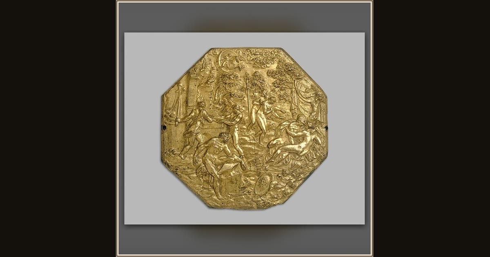

Mars and Venus Trapped by Vulcan
After Guglielmo della Porta · late 16th century · The Metropolitan Museum of Art · New York, USA
This little gilded plaque shows the trap Hephaestus sprung on Ares and Aphrodite, snaring the two lovers in an invisible net. It is the very tale Demodocus sings at the Phaeacian feast, while the gods crowd round and laugh. Explore its place in Book VIII of th